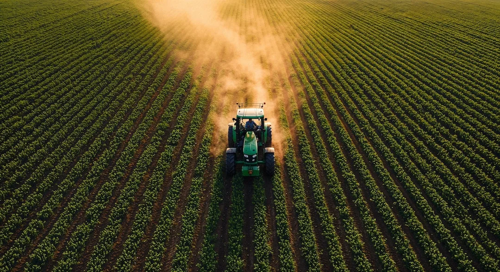
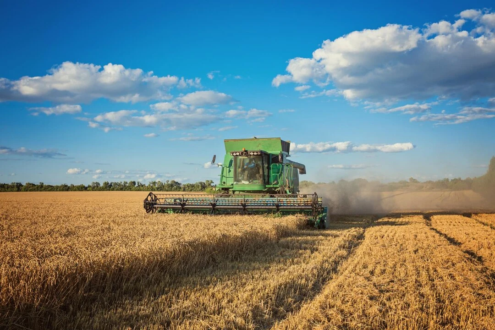
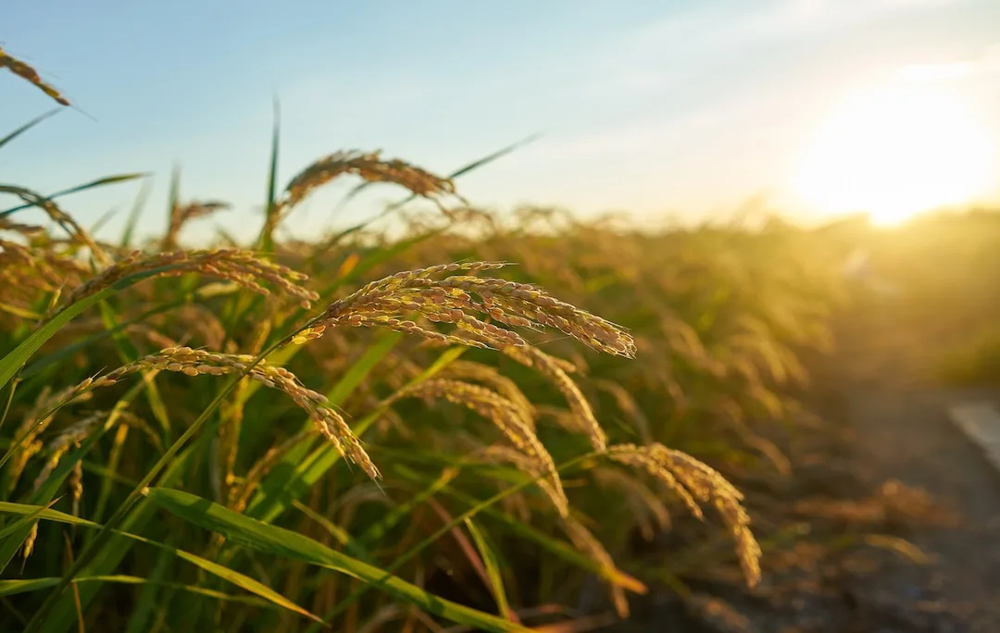

Predict Crop Yield
Advanced climate-based simulation for smarter agricultural planning in Africa

Advanced climate-based simulation for smarter agricultural planning in Africa

Analyze rainfall, temperature trends, and yield outcomes before planting

Support climate-resilient crop selection and land-use planning
The simulation system integrates crop parameters with projected climate variables such as rainfall and temperature. Users define their farming context, and the model estimates potential yield outcomes under climate variability.
Configure the simulation by selecting crop type, geographical location, planting period, and land size. The system evaluates expected yield performance for the projected 2026 climate conditions.
The AI recommendation summarizes the simulation result and highlights the most suitable crop based on predicted yield and projected climate conditions.
Run a simulation to generate an AI recommendation.